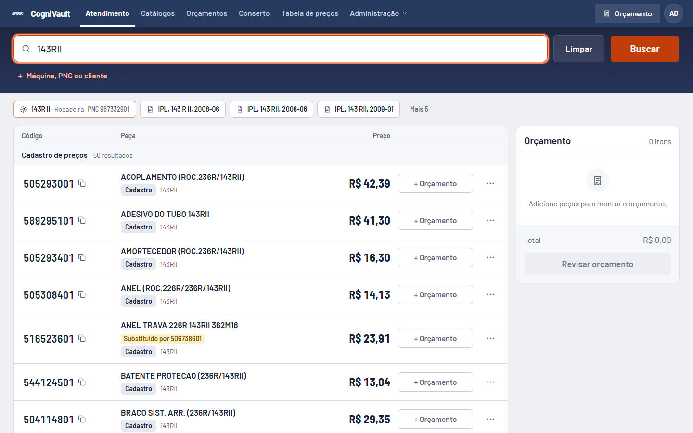
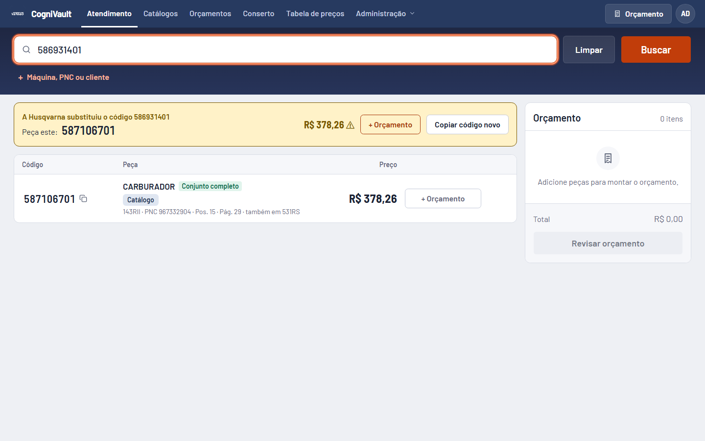
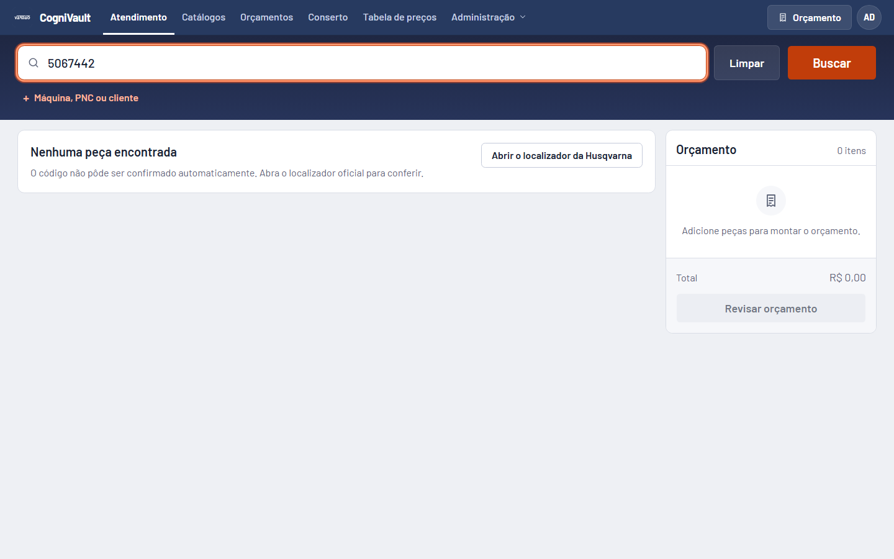
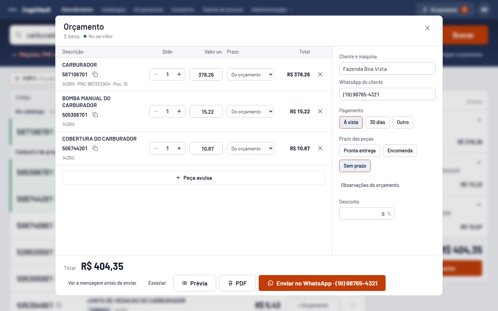
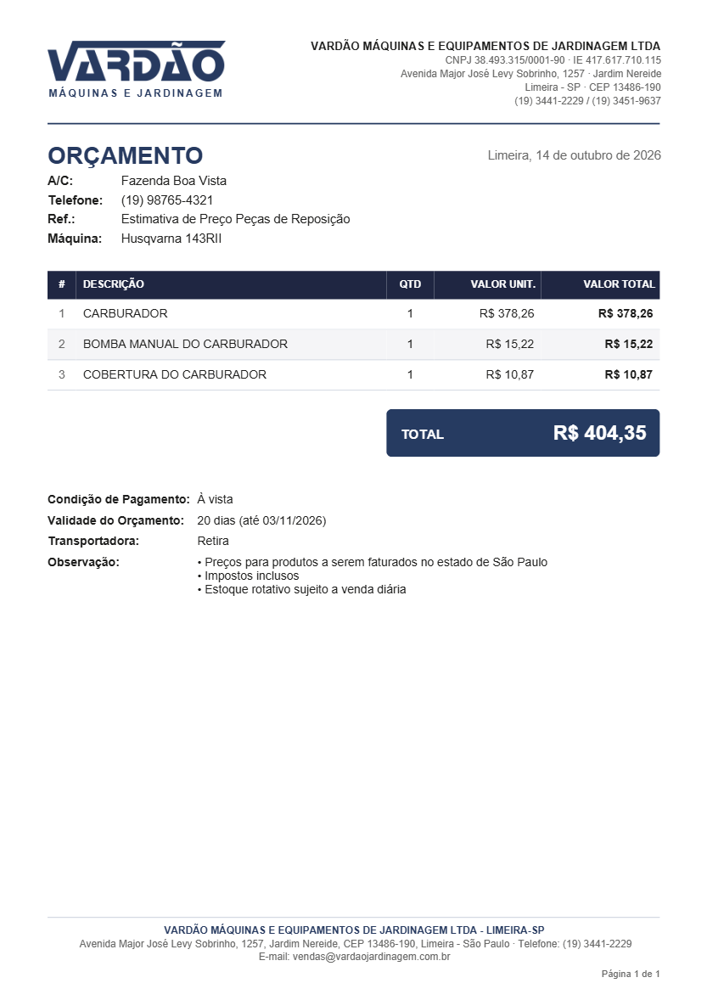
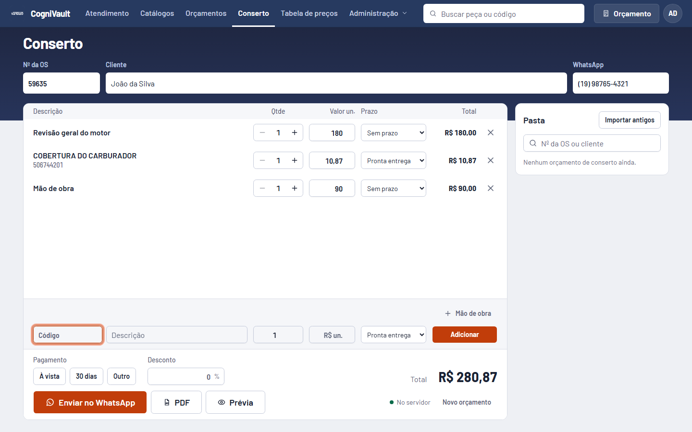
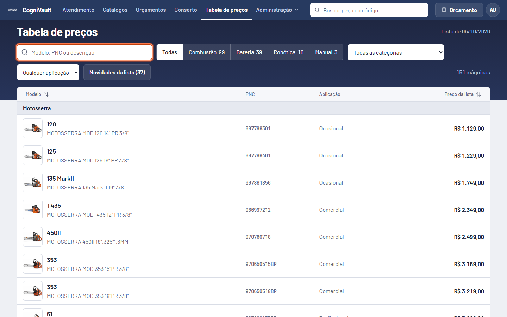
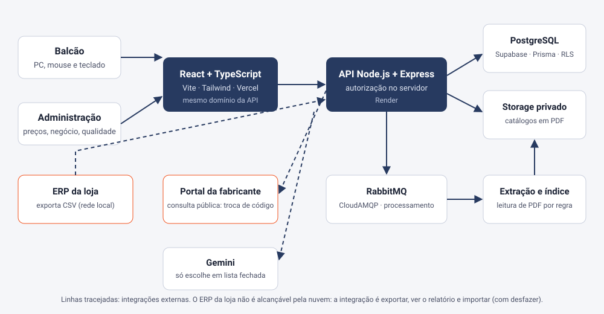

CogniVault
Catálogo técnico e orçamento de balcão para uma revenda de máquinas e peças. O atendente digita um código, uma peça ou um modelo e sai com preço, posição no desenho e orçamento pronto, sem chutar um código.
Abrir aplicação Falar comigo
O problema
No balcão de uma revenda, o cliente está na frente do atendente. Para responder "qual é a peça e quanto custa", era preciso abrir um catálogo em PDF, achar a posição no desenho, conferir o preço numa lista, ver se a peça estava na prateleira e montar o orçamento à mão. Cada passo vinha de uma fonte diferente, e um código errado vira devolução.
A solução
Um sistema único, pensado para computador com mouse e teclado e para quem atende com pressa: busca por código, peça, modelo ou PNC; vista explodida oficial com a posição clicável; preço da lista, aviso de preço antigo e prateleira vindos do ERP; e orçamento em PDF e WhatsApp que fecha o atendimento sem passo extra.
Regras que o produto não quebra
Nunca chutar o código
Código digitado devolve só o código exato e a substituição oficial da fabricante. Nada de "parecido". A IA só escolhe dentro de uma lista fechada de peças da máquina, e o servidor descarta qualquer resposta fora da lista.
O cliente nunca recebe o código
PDF, WhatsApp e impressão saem sem o código de peça, para o cliente não cotar em outra revenda com o nosso número.
O atendente quer a peça, não a explicação
Sem texto sobre como o sistema funciona. Todo estado vazio tem uma saída: botão, link oficial ou campo para digitar.
Teclado primeiro
Ctrl+K foca a busca, setas percorrem os resultados, Enter copia o código, + põe a peça no orçamento.
Mudança de dado é ato explícito
Importar preço ou prateleira mostra um relatório antes de gravar e guarda como desfazer. Nada é criado nem apagado por baixo.
Custo zero
Vercel, Render, Supabase, CloudAMQP e GitHub Actions nos planos gratuitos, sem nenhuma dependência paga.
Telas






Prints feitos numa loja simulada, com dados de demonstração.
Arquitetura

O ERP da loja roda numa rede local que a nuvem não alcança. Por isso a integração é exportar, conferir o relatório e importar (com desfazer), nunca leitura ao vivo.
Decisões e o que aprendi
O teste verde que mentia
Uma rotina que apaga orçamentos com mais de 1 ano (por privacidade) tinha teste e passava. Em produção, nunca rodava: a linha que a ligava estava dentro do bloco de nova tentativa do RabbitMQ. Descobri olhando o banco, dois dias depois. Hoje há um teste só para a ligação, provado desfazendo a correção e vendo o teste reprovar.
A cesta que não perde atendimento
O log de produção mostrou uma transação do Prisma estourando os 5 segundos padrão (6,7 s) num banco gratuito frio. O orçamento do atendente ficava só no navegador. A cesta passou a ser gravada inteira, de forma idempotente, com tempo de espera maior e reenvio automático com espera crescente. Duas abas do mesmo navegador viram uma cesta só.
"Hoje" terminava ontem
O servidor roda em UTC e a loja em UTC-3: o filtro "até hoje" cortava às 23h de ontem e o dono não via os orçamentos do próprio dia. Toda conta de dia agora usa o fuso da loja, travada por teste.
Recusar é melhor que errar
O leitor de catálogos em PDF prefere recusar um arquivo duvidoso, dizendo o motivo no painel, a gravar um código errado que envenenaria a busca inteira. E o código digitado, depois de uma auditoria, passou a devolver só o exato: um código "quase igual" no balcão é uma devolução.
Testar como o atendente digita
Testes E2E no navegador, numa loja simulada, exercitam o que se digita de verdade: minúsculo, espaço no lugar do hífen, código colado, emoji, texto sem sentido, 1.500 caracteres. Cada correção importante é provada por mutação: desfaz a correção e confere que o teste reprova.
Qualidade em números
Contagens feitas nos arquivos do projeto em 18/10/2026.